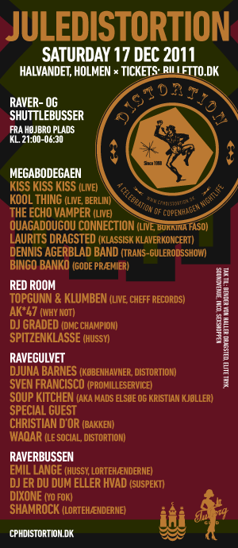

Dennis Agerblad Band show, Jule-distortion, Halvandet, Holmen, København.
|
MEGABODEGAEN kommer både til at fungerer som aftenens livescene, og som centrum for en lang række gale og underholdende indslag i løbet af aftenen, favnende fra transvestit-shows til bingo banko, gløgg og Debussy. På MEGABODEGAEN sker der følgende: × Kiss Kiss Kiss (live) RED ROOM bliver festens rå scene med gadedrenge og lyddamer fra brokvarterer og omegn - Nørrebro Hip Hop. Her kan man høre: × Topgunn & Klumben (live, Cheff Records) RAVERBUSSEN den legendariske rute 666 kører fest-shuttle mellem Halvandet og Højbro Plads hele natten, mens 4 progressive DJ’s skiftes til at vende pladerne. Kør, fest og lyt til: × Emil Lange (Hussy, Lortehænderne) RAVEGULVET bliver Halvandets farlige, rå og ubarmhjertige scene med Distortion All Stars, der sørger for tonstunge rytmer på det grå betongulv. All Stars består af:
|
 |
× Djuna Barnes (Københavner, Distortion) GRANSKOVEN bliver en psykedelisk udendørs fest med ildtønder, granskov, glögg og DJs. TAK Flygel sponsoreret af Bender von Haller Dragsted. Tak til: Elite Tryk for levering af plakater, altid til tiden, kan anbefales! Soundvenue, Inco, Sexshoppen for gaver til Bingo Banko. |
|